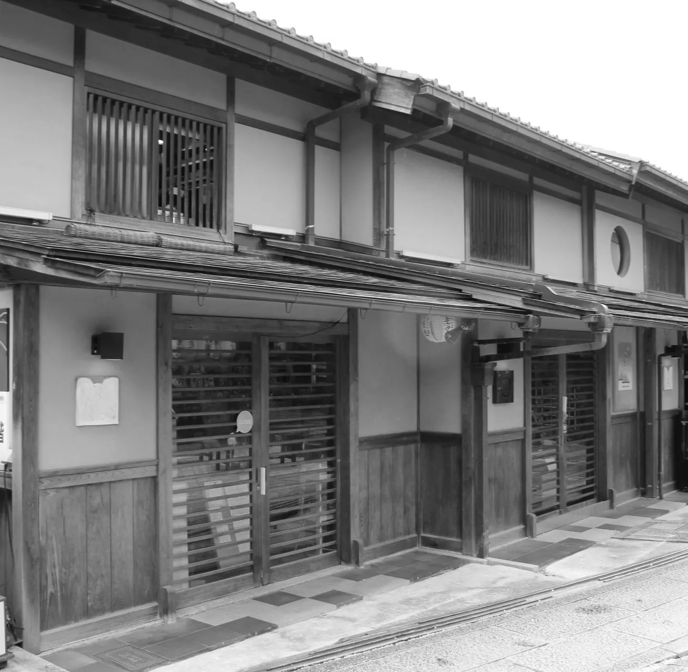
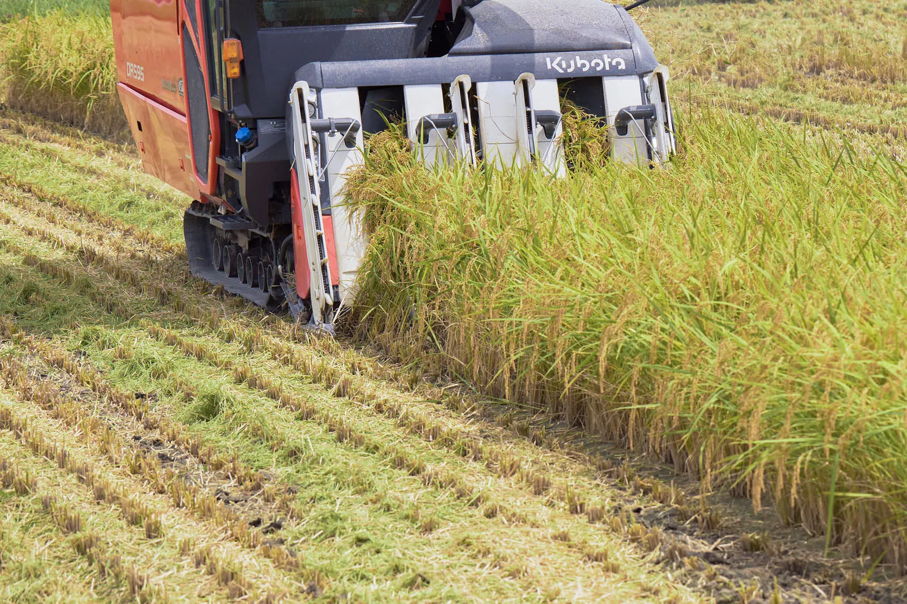
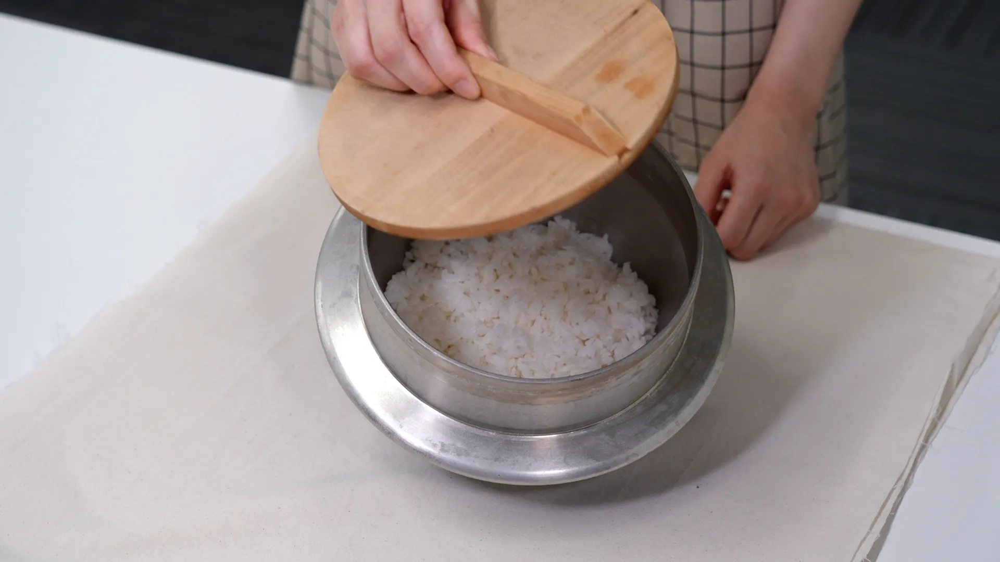
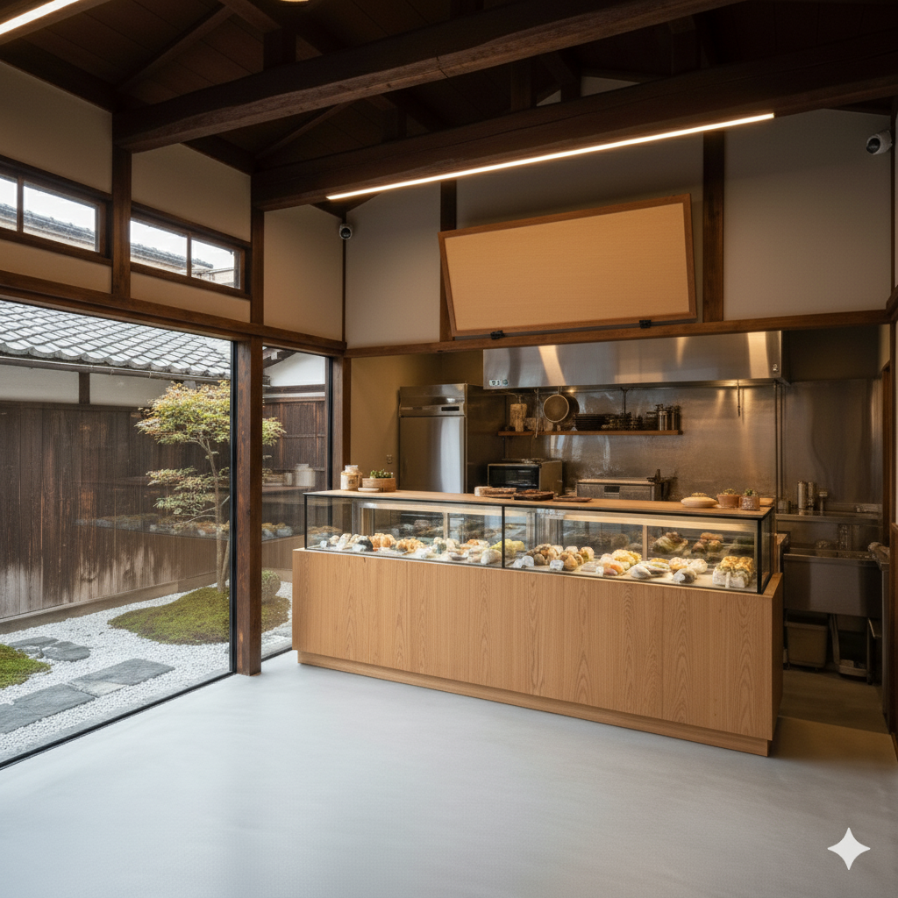
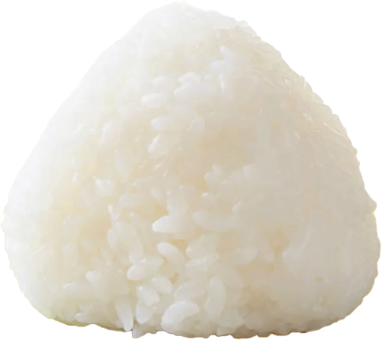

むすびができるまで
（1950年）
別府市ゆせん町で祖父が「丸木精米所」を創業
農家から米を大切に預かり、精米して届ける
地域に根ざした精米店として歩み始める

（1993年）
祖父に代わり、父が店を引き継ぐ
市場の変化に柔軟に向き合い、想いを大切に
未来も続く温かい経営を目指す

（2022年）
父の他界、建物の老朽化により精米店閉店
孫の現店主は「このまま潰したくない」と
想いを受け継ぎおむすび屋の開業を決意

（2025年）春4月頃
地域の人々に親しまれた店をリノベーションし
「お米のおいしさをまっすぐ伝える」
おむすび屋としてリニューアルオープン

おむすび屋は、つながりを大切にしていた 祖父の想いを新たな人へとつなぎ結んで いきたいという思いから
「おむすび」にかけて「むすび 」 という店名にしました。
むすびの想い
人をむすぶ幸せの形

おむすびとは、握るものではなく
むすぶもの。
人と人や私たち作り手と食べてく
ださるお客様、食事と人をむすぶ
形だと思っております。
想いをこめて、「ふわっ」と
ふんわり空気をふくませながら、
ひとつひとつ手でむすびながら、
炊き立ての瞬間のおいしさを味
わっていただけるように想いを込
め、ていねいに作っています。
「おいしい」「しあわせ」
食べていただくお客様に
「おいしい」と「しあわせ」を感
じてもらえるおむすびをお届けし
ます。
むすびの想い
人をむすぶ幸せの形
おむすびとは、握るものではなく
むすぶもの。
人と人や私たち作り手と食べてく
ださるお客様、食事と人をむすぶ
形だと思っております。
想いをこめて、「ふわっ」と
ふんわり空気をふくませながら、
ひとつひとつ手でむすびながら、
炊き立ての瞬間のおいしさを味
わっていただけるように想いを込
め、ていねいに作っています。
「おいしい」「しあわせ」
食べていただくお客様に
「おいしい」と「しあわせ」を感
じてもらえるおむすびをお届けし
ます。